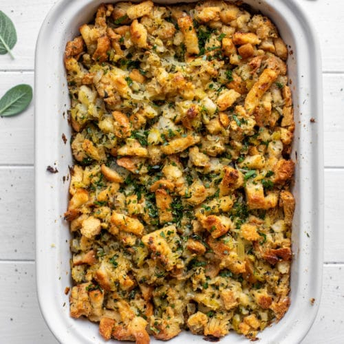

Stuffing

Another important side is stuffing. The Holidays are all about carbs. Carbs and meat... but mostly carbs. So to complement the big pot of beans, we're going to make up some great stuffing.
This stuffing starts with regular old boxed stuffing mix. We're not cheating, though. We just want that for the flavored croutons. We'll end up making this bready tradition our own with some chicken stock, aromatics, and vegetables.
Ingredients
- 1 box Stove Top stuffing mix, "herb" or "sage" flavor
- 1 medium yellow onion
- 1 stalk celery
- 1 three-ounce carrot
- 6 T butter
- 2 T bacon fat
- 1 T chicken bouillon
- 1 t dried rosemary leaves
- 1 t black pepper
- 1 t dried marjoram
- 1/2 t celery seeds
Steps
- Dice the yellow onion fine, slice the celery into thin pieces, then matchstick the carrots and further cut those matchsticks into 1/4 inch pieces.
- In a frying pan over medium-low heat, melt the bacon fat and add the onion. Sweat the onions well. It should take 10 to 15 minutes, stirring constantly. The goal is not to caramelize them, but to remove much of the water content so that they don't add too much moisture to the stuffing.
- When the onions are translucent, add the spices, celery, and carrots. Cook for two to three more minutes, then put aside.
- To a sauce pan add 1 1/2 cups water, the bouillon, and the butter. Bring to a boil then add the sauteed vegetables and stuffing mix.
- Stir until well combined, remove from heat and let sit, covered, for five minutes.
- Fluff with a fork before serving.